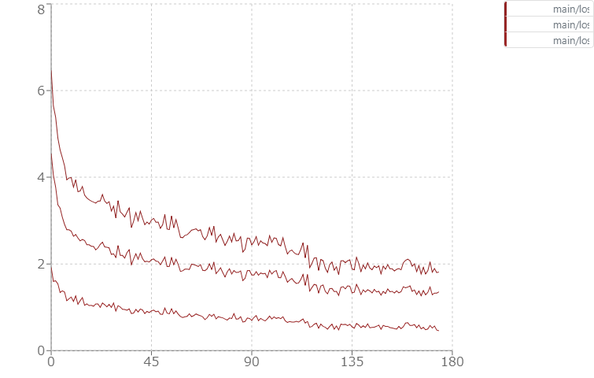
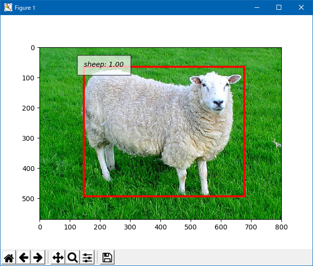

Introduction
ChainerCVで**SSD (Single Shot Multibox Detector)**を遊んでみます。
How to?
CUDA、cuDNNのチェック、仮想環境作成、仮想環境のアクティベートまでの手順は下記です。
パッケージのインストール
cupy、cupy-cuda、chainerのバージョンは一致させます。 cupy-cudaの末尾の数値は、先ほど確認したCUDAのバージョンに合わせます。 また、Chainerは4.5.0を使うため、ChainerCVは0.10.0になります。 (0.11.0はChainer 5.0.0になるため) また、下記の順番を守ってインストールします。 [code lang=”dos”] > python -m pip install –upgrade pip > python -m pip install cupy==4.5.0 > python -m pip install cupy-cuda92==4.5.0 > python -m pip install chainer==4.5.0 > python -m pip install chainercv==0.10.0 > python -m pip install opencv-python [/code]
最終確認
Chainer、ChainerCVがインストールされたこと、ChainerがCUDA、cuDNNを認識していることを確認します。 [code lang=”dos”] > python -c “import chainer; chainer.print_runtime_info()” Platform: Windows-10-10.0.17134-SP0 Chainer: 4.5.0 NumPy: 1.15.4 CuPy: CuPy Version : 4.5.0 CUDA Root : C:\Program Files\NVIDIA GPU Computing Toolkit\CUDA\v9.2 CUDA Build Version : 9020 CUDA Driver Version : 9020 CUDA Runtime Version : 9020 cuDNN Build Version : 7104 cuDNN Version : 7104 NCCL Build Version : None
> python -m pip freeze chainer==4.5.0 chainercv==0.10.0 cupy==4.5.0 cupy-cuda92==4.5.0 fastrlock==0.4 filelock==3.0.10 numpy==1.15.4 opencv-python==3.4.3.18 Pillow==5.3.0 protobuf==3.6.1 six==1.11.0 [/code]
デモ (学習)
ChainerCVのリポジトリにサンプルが含まれているのでブランチを指定してクローンします。 クローンしたらサンプルを実行します。 [code lang=”dos”] > git clone -b v0.10.0 https://www.github.com/chainer/chainercv > cd chainercv/examples/ssd > python train.py –model ssd300 –batchsize 32 –gpu 0 [/code] データセットはVOC2007のようです。 GeForce GTX 1080を利用した場合、約30時間かかりました。また、バッチサイズを増やそうとしたらメモリが足りなくなりました。 下記は学習後の損失の推移グラフです。 上から、全体の損失、カテゴリの損失、位置の損失です。

{kind=link}
デモ (推論)
前項での学習した結果、モデルがresult\model_iter_120000として保存されていますのでそれを活用します。 学習に使ったVOC2007のカテゴリは下記のとおりです。
- Aeroplanes
- Bicycles
- Birds
- Boats
- Bottles
- Buses
- Cars
- Cats
- Chairs
- Cows
- Dining tables
- Dogs
- Horses
- Motorbikes
- People
- Potted plants
- Sheep
- Sofas
- Trains
- TV/Monitors
試しにWikipediaにある羊の画像(Lleyn sheep.jpg)を認識させてみます。 なお、推論のデモには追加でモジュールが必要であるためインストールします。 [code lang=”dos”] > pip install matplotlib [/code] 実行は下記のように行います。 [code lang=”dos”] > python demo.py –gpu 0 –pretrained-model result\model_iter_120000 800px-Lleyn_sheep.jpg [/code]

良い感じです。
{kind=link}